ホームメイドは内装クロス・外壁塗装・水回り・木部塗装補修工事・畳入替え・建具補修などの建築リフォーム工事を専門とする会社です。
TEL. 058-262-5694
〒500-8029 岐阜市東材木町37-2
デッキ補修工事の工程Outer wall Color best PAINT
Y邸 デッキ・通し柱補修工事
- 通し柱養生
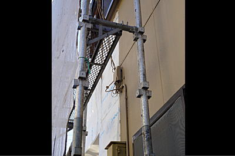- デッキ保護の板金
- 木部デッキ保護のため板金でカバー
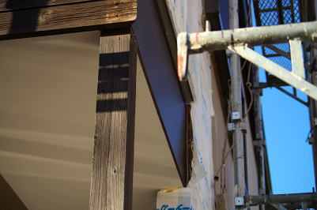 - サイディング貼り1
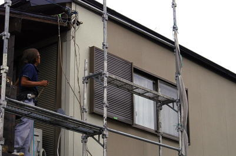- サイディング仕上げ調整2
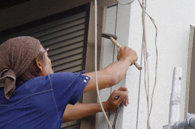- サイディング仕上げ調整
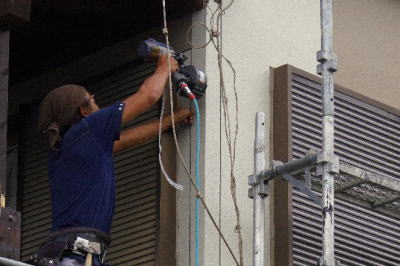- サイディング貼り3
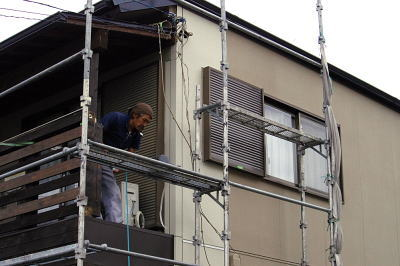- 玄関のサイディング4
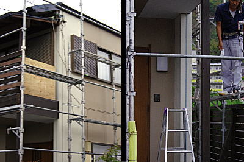- サイディング貼り5
- 配線等の緊桔
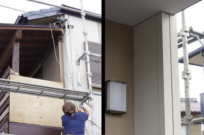 - サイディング貼り完了
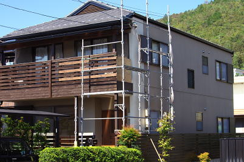- 塗装のための養生
- 現状の色と合わせるのはプロの技術
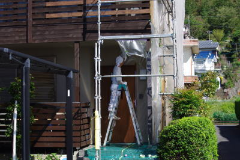 - 玄関の養生3
- 玄関等保護のためしっかり養生
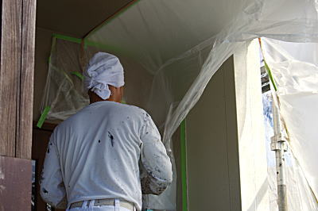 - 養生シート
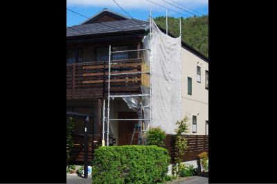- サイディング塗装
- 既設の色と遜色のない色に仕上げます
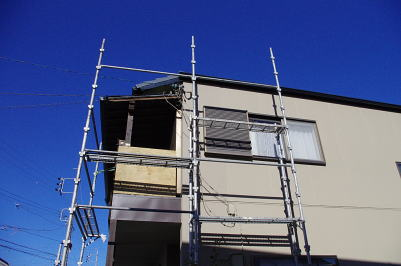 - 東面外壁塗装
- 綺麗に仕上げで、色の区別がつきません
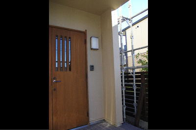 - 玄関塗装の仕上がり
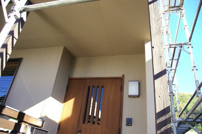- 外壁の仕上がり
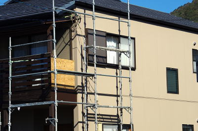- 木製手摺り取付
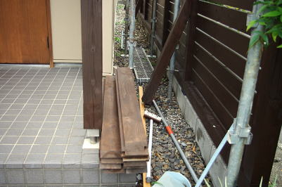- 東側の木製デッキのパーツ
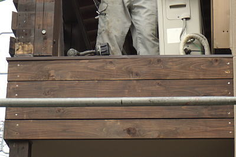- 東面の木製手摺りの取付
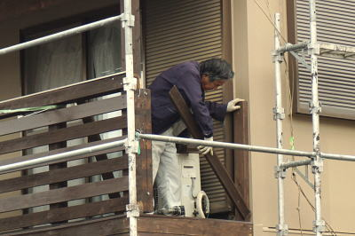- 東面の木製手摺りの取付
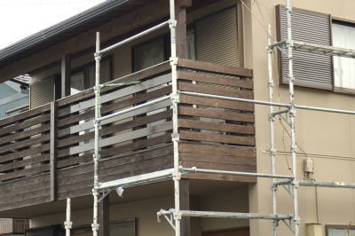- 東面の木製手摺りの取付
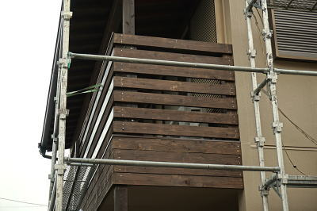- 木製手摺り笠木取付
- 雨水仕舞いに笠木を取り付けます
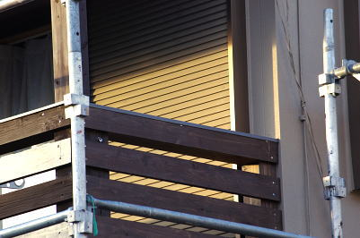 - 仕上げ再塗装1
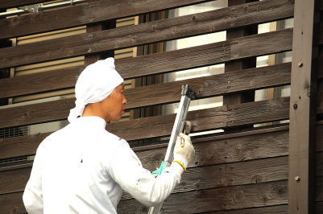- 仕上げ再塗装2
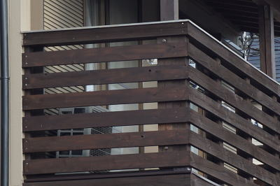- 仕上げ再塗装3
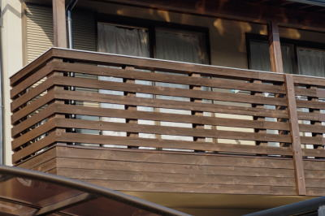- 仕上げ再塗装4
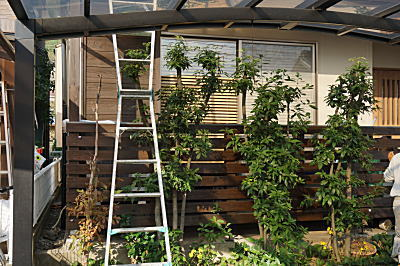- 完成(足場外し)

- 完成1
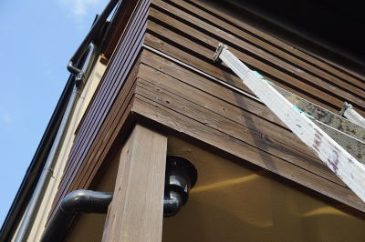- 完成2
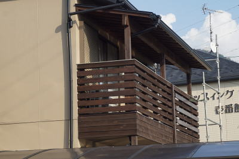- 完成3
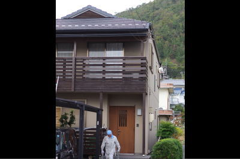
- 〒500-8029
岐阜市東材木町37-2
携帯. 090-8451-0238
TEL. 058-262-5694 FAX. 058-262-5689
E-mail. usui_@kaeru.gr.jp
担当者 臼井 まで お気軽にご連絡ください。
バナースペース
ホームメイドで嬉しいリフォーム！
〒500-8029
岐阜市東材木町37-2
代表者 臼井常雄
TEL 058-262-5694
FAX 058-262-5689
携帯 090-8451-0238